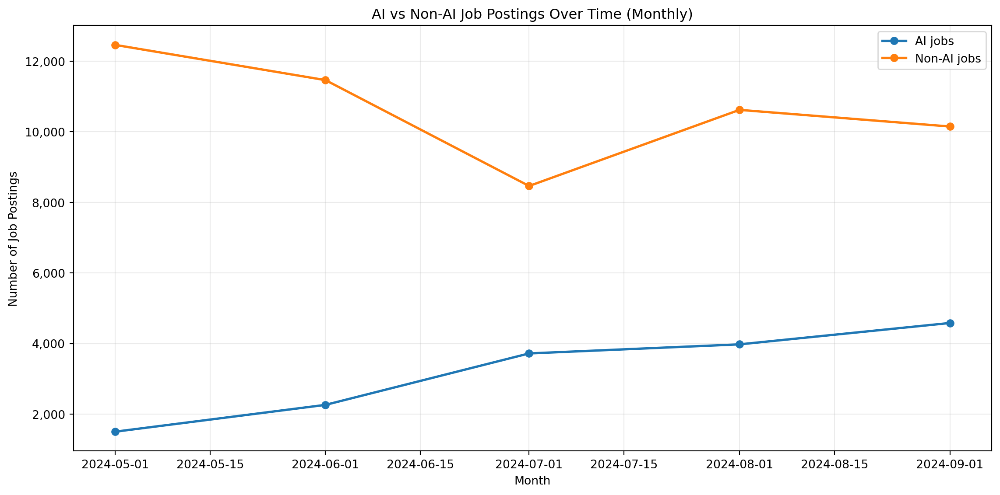
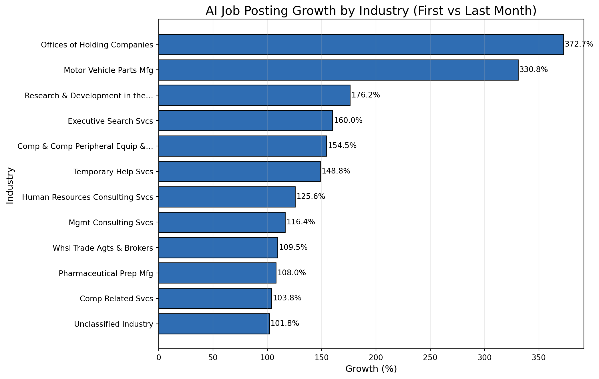
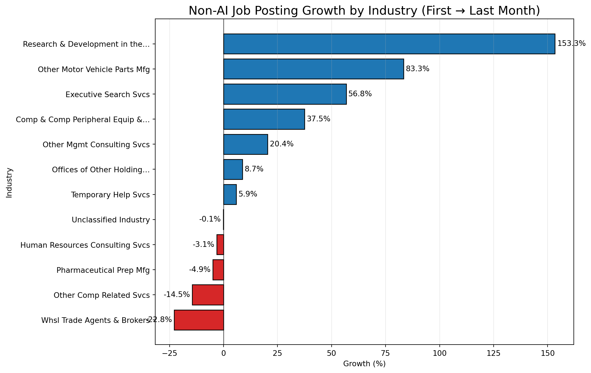
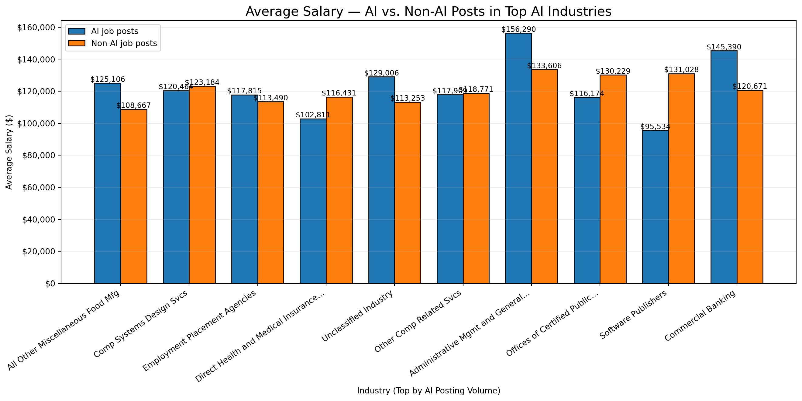

from pyspark.sql import SparkSessionimport pandas as pdimport matplotlib.pyplot as pltraw_df = pd.read_csv("data/lightcast_job_postings.csv")#raw_df.columns.tolist()
/var/folders/7j/ct705g296ls7nrjh30h9pyg40000gn/T/ipykernel_71822/1289692877.py:5: DtypeWarning:
Columns (19,30) have mixed types. Specify dtype option on import or set low_memory=False.
/var/folders/7j/ct705g296ls7nrjh30h9pyg40000gn/T/ipykernel_71822/2470702404.py:9: FutureWarning:
A value is trying to be set on a copy of a DataFrame or Series through chained assignment using an inplace method.
The behavior will change in pandas 3.0. This inplace method will never work because the intermediate object on which we are setting values always behaves as a copy.
For example, when doing 'df[col].method(value, inplace=True)', try using 'df.method({col: value}, inplace=True)' or df[col] = df[col].method(value) instead, to perform the operation inplace on the original object.
/var/folders/7j/ct705g296ls7nrjh30h9pyg40000gn/T/ipykernel_71822/2470702404.py:10: FutureWarning:
A value is trying to be set on a copy of a DataFrame or Series through chained assignment using an inplace method.
The behavior will change in pandas 3.0. This inplace method will never work because the intermediate object on which we are setting values always behaves as a copy.
For example, when doing 'df[col].method(value, inplace=True)', try using 'df.method({col: value}, inplace=True)' or df[col] = df[col].method(value) instead, to perform the operation inplace on the original object.
/var/folders/7j/ct705g296ls7nrjh30h9pyg40000gn/T/ipykernel_71822/2470702404.py:10: FutureWarning:
Setting an item of incompatible dtype is deprecated and will raise an error in a future version of pandas. Value 'Unknown' has dtype incompatible with float64, please explicitly cast to a compatible dtype first.
2 Plot setup for AI vs Non-AI job posting count
import os, reimport pandas as pd# Kelly’s cleaned dataframe must existassert"raw_df"inglobals(), "raw_df must exist (Kelly’s cleaned dataframe)."df = raw_df.copy()# Parse date -> monthif"POSTED"notin df.columns:raiseValueError("Expected a POSTED column in raw_df.")df["POSTED_DT"] = pd.to_datetime(df["POSTED"], errors="coerce")df = df.dropna(subset=["POSTED_DT"])df["month"] = df["POSTED_DT"].dt.to_period("M").dt.to_timestamp()# Combine likely text fieldscandidate_text_cols = ["TITLE","TITLE_CLEAN","TITLE_NAME","BODY","SKILLS","SKILLS_NAME","SPECIALIZED_SKILLS","SPECIALIZED_SKILLS_NAME","SOFTWARE_SKILLS","SOFTWARE_SKILLS_NAME","COMMON_SKILLS","COMMON_SKILLS_NAME","CERTIFICATIONS_NAME",]text_cols = [c for c in candidate_text_cols if c in df.columns]ifnot text_cols: text_cols = ["TITLE"] if"TITLE"in df.columns else []text_series = ( df[text_cols].astype(str).agg(" ".join, axis=1).str.lower()if text_cols else pd.Series([""] *len(df), index=df.index))# FIXED list (no cut-off strings)ai_terms = ["artificial intelligence","ai","machine learning","deep learning","neural network","nlp","natural language","computer vision","reinforcement learning","generative ai","llm","gpt","chatgpt","transformer","bert","prompt engineer","prompt engineering"]# Word-boundary pattern so we don't match 'retail' for 'ai'ai_pattern = re.compile(r"\b(?:"+"|".join(re.escape(t) for t in ai_terms)+r")\b", flags=re.IGNORECASE,)df["IS_AI"] = text_series.str.contains(ai_pattern, na=False)# Monthly countsmonthly = ( df.groupby(["month","IS_AI"]) .size() .unstack(fill_value=0) .rename(columns={True: "AI", False: "Non-AI"}) .sort_index())monthly_plt = monthly.copy()monthly_plt.head(12)
IS_AI
Non-AI
AI
month
2024-05-01
12460
1503
2024-06-01
11462
2263
2024-07-01
8463
3720
2024-08-01
10619
3977
2024-09-01
10148
4582
3 Job Postings for AI vs Non-AI Jobs
import osimport matplotlib.pyplot as pltfrom matplotlib.ticker import FuncFormatterassert"monthly_plt"inglobals(), "Run the setup chunk first."os.makedirs("output", exist_ok=True)plt.figure(figsize=(12, 6))plt.plot(monthly_plt.index, monthly_plt["AI"], marker="o", linewidth=2, label="AI jobs")plt.plot(monthly_plt.index, monthly_plt["Non-AI"], marker="o", linewidth=2, label="Non-AI jobs")plt.title("AI vs Non-AI Job Postings Over Time (Monthly)")plt.xlabel("Month")plt.ylabel("Number of Job Postings")plt.gca().yaxis.set_major_formatter(FuncFormatter(lambda x, _: f"{int(x):,}"))plt.grid(True, alpha=0.25)plt.legend()plt.tight_layout()plt.savefig("output/ai_vs_nonai_over_time.png", dpi=200, bbox_inches="tight")plt.show()

The AI VS Non-AI Jobs graph hows two clear trends:
AI jobs have been increasing uninterruptedly each month from May to September 2024. This suggests growing demand for AI-related roles.
Non-AI jobs started much higher but declined between May and July before slightly recovering in August. By September, they still remained lower than at the start.
In summary, there are still more Non-AI jobs than AI jobs in total; however, the number of available AI jobs is increasing rapidly. This transition indicates the shifting of the job market towards the AI-based roles.
4 Prep for monthly AI counts
import os, reimport numpy as npimport pandas as pdassert"raw_df"inglobals(), "raw_df must exist."df = raw_df.copy()# ---- Dates -> month ----df["POSTED_DT"] = pd.to_datetime(df["POSTED"], errors="coerce")df = df.dropna(subset=["POSTED_DT"])df["month"] = df["POSTED_DT"].dt.to_period("M").dt.to_timestamp()# ---- AI detector (reuse if already present) ----if"IS_AI"notin df.columns: ai_terms = ["artificial intelligence","ai","machine learning","deep learning","neural network","nlp","natural language","computer vision","reinforcement learning","generative ai","llm","gpt","chatgpt","transformer","bert","prompt engineer","prompt engineering" ] text_cols = [c for c in ["TITLE","TITLE_CLEAN","BODY","SKILLS","SKILLS_NAME","SPECIALIZED_SKILLS","SPECIALIZED_SKILLS_NAME","SOFTWARE_SKILLS","SOFTWARE_SKILLS_NAME","COMMON_SKILLS","COMMON_SKILLS_NAME","CERTIFICATIONS_NAME" ] if c in df.columns] combined = (df[text_cols].astype(str).agg(" ".join, axis=1).str.lower()if text_cols else pd.Series([""], index=df.index)) pattern = re.compile(r"\b(?:%s)\b"%"|".join(re.escape(t) for t in ai_terms), re.I) df["IS_AI"] = combined.str.contains(pattern, na=False)# ---- Pick the best available industry label ----ind_candidates = ["NAICS_2022_6_NAME","NAICS6_NAME","NAICS_2022_4_NAME","NAICS4_NAME","NAICS_2022_2_NAME","NAICS2_NAME","NAICS_2022_6","NAICS6"]IND_COL =next((c for c in ind_candidates if c in df.columns), None)if IND_COL isNone:raiseValueError("No NAICS/industry name/code columns found.")# ---- Monthly AI counts per industry ----ai = df[df["IS_AI"]].copy()ai_monthly = ( ai.groupby([IND_COL, "month"]) .size() .reset_index(name="count"))# ---- Compute growth: (last 3-mo avg - first 3-mo avg) / first 3-mo avg ----def growth_row(g): g = g.sort_values("month") k =min(3, len(g)) first = g["count"].iloc[:k].mean() last = g["count"].iloc[-k:].mean() total = g["count"].sum()if k <2or first ==0:return pd.Series({"growth_pct": np.nan, "first_avg": first, "last_avg": last, "months": len(g), "total": total})return pd.Series({"growth_pct": (last - first) / first *100.0,"first_avg": first, "last_avg": last,"months": len(g), "total": total})growth_df = ai_monthly.groupby(IND_COL).apply(growth_row).reset_index()# filter out tiny-volume industries to avoid wild % changesMIN_TOTAL =30growth_df = growth_df[growth_df["total"] >= MIN_TOTAL].dropna(subset=["growth_pct"])# pick top movers (adjust top_n)top_n =12growth_top = growth_df.sort_values("growth_pct", ascending=False).head(top_n)# Save a copy if want a table in the docgrowth_top_rounded = growth_top.copy()growth_top_rounded["growth_pct"] = growth_top_rounded["growth_pct"].round(1)growth_top_rounded.head(top_n)
/var/folders/7j/ct705g296ls7nrjh30h9pyg40000gn/T/ipykernel_71822/672499099.py:67: DeprecationWarning:
DataFrameGroupBy.apply operated on the grouping columns. This behavior is deprecated, and in a future version of pandas the grouping columns will be excluded from the operation. Either pass `include_groups=False` to exclude the groupings or explicitly select the grouping columns after groupby to silence this warning.
NAICS_2022_6_NAME
growth_pct
first_avg
last_avg
months
total
260
Offices of Other Holding Companies
372.7
3.666667
17.333333
5.0
56.0
300
Other Motor Vehicle Parts Manufacturing
330.8
4.333333
18.666667
5.0
68.0
358
Research and Development in the Physical, Engi...
176.2
14.000000
38.666667
5.0
133.0
137
Executive Search Services
160.0
6.666667
17.333333
5.0
59.0
80
Computer and Computer Peripheral Equipment and...
154.5
3.666667
9.333333
5.0
33.0
406
Temporary Help Services
148.8
42.333333
105.333333
5.0
352.0
189
Human Resources Consulting Services
125.6
13.000000
29.333333
5.0
96.0
296
Other Management Consulting Services
116.4
46.666667
101.000000
5.0
337.0
427
Wholesale Trade Agents and Brokers
109.5
7.000000
14.666667
5.0
52.0
325
Pharmaceutical Preparation Manufacturing
108.0
8.333333
17.333333
5.0
62.0
280
Other Computer Related Services
103.8
70.666667
144.000000
5.0
509.0
415
Unclassified Industry
101.8
280.666667
566.333333
5.0
2025.0
In this table, we can see AI job postings growing across many industries. A few sectors jump fast but are small, like Other Holding Companies and Motor Vehicle Parts, and sound signals, but the totals are low, so that they may swing. The strongest, faster growth in real volume is in Temporary Help Services, Other Management Consulting, and Other Computer-Related Services; their monthly averages more than doubled. R&D and Executive Search are up too, with mid totals. There is also a growing group called “Unclassified.” This group includes various categories, so we need to use this data carefully.
5 AI-Driven Job Growth by Industry
# --- Short, readable labels + plot & save (Option B) -------------------------import os, refrom textwrap import shortenimport matplotlib.pyplot as plt# Use existing industry column if defined; otherwise default:IND_COL = IND_COL if"IND_COL"inglobals() else"NAICS_2022_6_NAME"def short_label(s: str) ->str: s =str(s)# Common abbreviations to keep labels compact but clear s = re.sub(r'(?i)\bservices?\b', 'Svcs', s) s = re.sub(r'(?i)\bmanufacturing\b', 'Mfg', s) s = re.sub(r'(?i)\bpreparation\b', 'Prep', s) s = re.sub(r'(?i)\bmanagement\b', 'Mgmt', s) s = re.sub(r'(?i)\bcomputer\b', 'Comp', s) s = re.sub(r'(?i)\bequipment\b', 'Equip', s) s = re.sub(r'(?i)\bwholesale\b', 'Whsl', s) s = re.sub(r'(?i)\bagents?\b', 'Agts', s) s = re.sub(r'(?i)\bscientific\b', 'Sci', s) s = re.sub(r'(?i)\bengineering\b', 'Eng', s) s = re.sub(r'(?i)\band\b', '&', s) s = re.sub(r'(?i)\bother\b\s*', '', s) # drop leading "Other"# Final safe trimreturn shorten(s.strip(), width=32, placeholder='…')plot_df = growth_top.copy()plot_df["label"] = plot_df[IND_COL].astype(str).map(short_label)fig, ax = plt.subplots(figsize=(11, 7))bars = ax.barh(plot_df["label"], plot_df["growth_pct"], color="#2F6DB3", edgecolor="black")ax.invert_yaxis() # biggest at topax.set_title("AI Job Posting Growth by Industry (First vs Last Month)", fontsize=16)ax.set_xlabel("Growth (%)", fontsize=12)ax.set_ylabel("Industry", fontsize=12)ax.grid(axis="x", alpha=0.25)# Value labelsfor b in bars: w = b.get_width() ax.text( w + (1if w >=0else-1), b.get_y() + b.get_height() /2,f"{w:.1f}%", va="center", ha="left"if w >=0else"right", fontsize=10, )plt.tight_layout()os.makedirs("output", exist_ok=True)plt.savefig("output/ai_industry_growth_shortlabels.png", dpi=200, bbox_inches="tight")plt.show()

The chart shows that AI job postings are increasing quickly in many industries. The largest increases are in Offices of Holding Companies (about 373%) and Motor Vehicle Parts Manufacturing (about 331%). We also see significant growth in R&D (physical/engineering) (about 176%), Executive Search (about 160%), Computer & Peripheral Equipment (about 155%), and Temporary Help Services (about 149%). Other sectors like HR Consulting, Management Consulting, Wholesale Trade Agents, Pharmaceutical Preparation, Other Computer Related, and Unclassified categories enlarged by slightly more than 100% all together. The growth is mainly distributed among the different sectors, while only some industries exhibit the highest increases.
6 Non-AI Job Posting Growth by Industry
import os, reimport pandas as pdfrom textwrap import shortenassert"raw_df"inglobals(), "raw_df must exist (cleaned dataframe)."df = raw_df.copy()# Pick an industry-name column that existsIND_COL =next((c for c in ["NAICS_2022_6_NAME","NAICS6_NAME","NAICS_2022_4_NAME","NAICS4_NAME","NAICS_2022_2_NAME","NAICS2_NAME"] if c in df.columns), None)assert IND_COL, "No industry/NAICS name column found."TITLE_COL ="TITLE_CLEAN"if"TITLE_CLEAN"in df.columns else"TITLE"assert TITLE_COL in df.columns, "Need a TITLE or TITLE_CLEAN column."# Dates → monthdf["POSTED_DT"] = pd.to_datetime(df["POSTED"], errors="coerce")df = df.dropna(subset=["POSTED_DT", IND_COL])df["month"] = df["POSTED_DT"].dt.to_period("M").dt.to_timestamp()# Detect AI vs non-AI via title keywordsAI_TERMS = ["artificial intelligence", r"\bAI\b", "machine learning", r"\bML\b","deep learning", r"\bLLM\b", r"\bNLP\b", "computer vision","generative", "chatgpt", r"gpt-\d+", "transformer", "bert","prompt engineer", "reinforcement learning"]ai_pat = re.compile("|".join(AI_TERMS), flags=re.IGNORECASE)if"is_ai"notin df.columns: df["is_ai"] = df[TITLE_COL].astype(str).str.contains(ai_pat, na=False)# Use industries from AI-growth visual if available; otherwise pick top 10 by AI postings last monthif"growth_top"inglobals(): target_inds = [str(x) for x in growth_top[IND_COL].dropna().tolist()]else: last_m = df["month"].max() ai_last = (df[df["is_ai"] & (df["month"] == last_m)] .groupby(IND_COL).size().sort_values(ascending=False).head(10)) target_inds = ai_last.index.astype(str).tolist()# Build non-AI growth (% first→last month) for those industriesnon_ai = df[(~df["is_ai"]) & (df[IND_COL].astype(str).isin(target_inds))].copy()monthly = (non_ai.groupby([IND_COL, "month"]).size().reset_index(name="count"))first_last = (monthly.sort_values("month") .groupby(IND_COL, as_index=False) .agg(first=("count","first"), last=("count","last")))first_last = first_last[first_last["first"] >0].copy()first_last["growth_pct"] = ((first_last["last"] - first_last["first"])/ first_last["first"]) *100.0first_last = first_last[first_last[IND_COL].astype(str).isin(target_inds)]def short_label(s: str) ->str: s =str(s) s = re.sub(r'(?i)\bservices?\b', 'Svcs', s) s = re.sub(r'(?i)\bmanufacturing\b', 'Mfg', s) s = re.sub(r'(?i)\bmanagement\b', 'Mgmt', s) s = re.sub(r'(?i)\bpreparation\b', 'Prep', s) s = re.sub(r'(?i)\bcomputer\b', 'Comp', s) s = re.sub(r'(?i)\bequipment\b', 'Equip', s) s = re.sub(r'(?i)\bwholesale\b', 'Whsl', s) s = re.sub(r'(?i)\band\b', '&', s) s = re.sub(r'\s+', ' ', s).strip()return shorten(s, width=32, placeholder='…')non_ai_growth_plot_df = (first_last .sort_values("growth_pct", ascending=False) .assign(label=lambda d: d[IND_COL].map(short_label)))os.makedirs("output", exist_ok=True)non_ai_growth_plot_df.head(10) # preview table
NAICS_2022_6_NAME
first
last
growth_pct
label
8
Research and Development in the Physical, Engi...
45
114
153.333333
Research & Development in the…
6
Other Motor Vehicle Parts Manufacturing
12
22
83.333333
Other Motor Vehicle Parts Mfg
1
Executive Search Services
37
58
56.756757
Executive Search Svcs
0
Computer and Computer Peripheral Equipment and...
16
22
37.500000
Comp & Comp Peripheral Equip &…
5
Other Management Consulting Services
162
195
20.370370
Other Mgmt Consulting Svcs
3
Offices of Other Holding Companies
23
25
8.695652
Offices of Other Holding…
9
Temporary Help Services
272
288
5.882353
Temporary Help Svcs
10
Unclassified Industry
2028
2025
-0.147929
Unclassified Industry
2
Human Resources Consulting Services
32
31
-3.125000
Human Resources Consulting Svcs
7
Pharmaceutical Preparation Manufacturing
61
58
-4.918033
Pharmaceutical Prep Mfg
import osimport matplotlib.pyplot as plt# If prep didn't run in this kernel, rebuild quicklyif"non_ai_growth_plot_df"notinglobals():# Re-run a minimal rebuild using the same logicassert"raw_df"inglobals(), "raw_df is required to rebuild plot data."# execute the prep cell above; keeping this here for resilience:# (We simply import the name if it exists; otherwise advise to run prep.)raiseAssertionError("Run the prep chunk first to create non_ai_growth_plot_df.")dfp = non_ai_growth_plot_df.copy()if dfp.empty:print("non_ai_growth_plot_df is empty—nothing to plot. ""Check that selected industries have non-AI rows in the first/last month.")else: os.makedirs("output", exist_ok=True) colors = dfp["growth_pct"].ge(0).map({True: "#1f77b4", False: "#d62728"}).to_numpy() fig, ax = plt.subplots(figsize=(11, 7)) bars = ax.barh(dfp["label"], dfp["growth_pct"], color=colors, edgecolor="black") ax.axvline(0, color="black", linewidth=1, alpha=0.6) ax.invert_yaxis() ax.set_title("Non-AI Job Posting Growth by Industry (First → Last Month)", fontsize=16) ax.set_xlabel("Growth (%)") ax.set_ylabel("Industry") ax.grid(axis="x", alpha=0.25)for b, v inzip(bars, dfp["growth_pct"]): ax.text( v + (1if v >=0else-1), b.get_y() + b.get_height() /2,f"{v:.1f}%", va="center", ha="left"if v >=0else"right", fontsize=10, ) plt.tight_layout() plt.savefig("output/non_ai_growth_pct_in_ai_growth_industries_colored.png", dpi=200, bbox_inches="tight") plt.show()

The Non-AI job posting growth chart shows the following:
The biggest gains are in Research & Development (~153%) and Motor Vehicle Parts (~83%). Executive Search (~57%) and Computer/Peripheral Equipment (~38%) also grew well. Management Consulting (~20%) is up, while Offices of Holding Companies (~9%) and Temporary Help (~6%) show small growth.
A few areas are slipping: Wholesale Trade Agents & Brokers (~-23%), Other Computer-Related Services (~-15%), Pharmaceutical Prep (~-5%), and HR Consulting (~-3%) declined; Unclassified is flat.
This means for us that non-AI roles are still growing, just not as fast as AI roles. The non-AI opportunities we want more of should be targeted to R&D labs, automotive suppliers, executive search firms, and hardware/peripherals. Outreach to these fields will guarantee more non-AI opportunities. The areas of wholesale, general computer, and pharma-related services, HR consulting would be where one could select with more discrimination since the demand for these practices is on the decline.
7 AI-powered roles vs non-ai roles salary prep
import os, reimport numpy as npimport pandas as pdassert"raw_df"inglobals(), "raw_df (cleaned dataframe) must exist."df = raw_df.copy()# --- Pick columns robustly ---TITLE_COL ="TITLE_CLEAN"if"TITLE_CLEAN"in df.columns else"TITLE"assert TITLE_COL in df.columns, "Need a TITLE or TITLE_CLEAN column."IND_COL =next((c for c in ["NAICS_2022_6_NAME","NAICS6_NAME","NAICS_2022_4_NAME","NAICS4_NAME","NAICS_2022_2_NAME","NAICS2_NAME","LIGHTCAST_SECTORS_NAME"] if c in df.columns), None)assert IND_COL, "No industry/NAICS name column found."# Salary: prefer SALARY; otherwise average of FROM/TO if presentsal = pd.to_numeric(df.get("SALARY", np.nan), errors="coerce")if sal.isna().all() and {"SALARY_FROM","SALARY_TO"} <=set(df.columns): s_from = pd.to_numeric(df["SALARY_FROM"], errors="coerce") s_to = pd.to_numeric(df["SALARY_TO"], errors="coerce") sal = (s_from + s_to) /2df["salary_num"] = pd.to_numeric(sal, errors="coerce")# keep positive salaries onlydf = df[df["salary_num"] >0].copy()# Optional: cap extreme outliers so a few posts don't dominate the meanq_low, q_hi = df["salary_num"].quantile([0.01, 0.99])df["salary_num"] = df["salary_num"].clip(q_low, q_hi)# --- Tag AI vs non-AI using title keywords ---AI_TERMS = ["artificial intelligence", r"\bAI\b", "machine learning", r"\bML\b","deep learning", r"\bLLM\b", r"\bNLP\b", "computer vision","generative", "chatgpt", r"gpt-\d+", "transformer", r"\bbert\b","prompt engineer", "reinforcement learning", "data scientist", "ai engineer"]ai_pat = re.compile("|".join(AI_TERMS), flags=re.IGNORECASE)df["is_ai"] = df[TITLE_COL].astype(str).str.contains(ai_pat, na=False)# --- Find top industries by AI posting count (choose N)N =10ai_counts = (df[df["is_ai"]] .groupby(IND_COL, dropna=True) .size() .sort_values(ascending=False) .head(N) .rename("ai_posts") .reset_index())top_inds = ai_counts[IND_COL].astype(str).tolist()# --- Compute average salary (AI vs non-AI) for those industriessubset = df[df[IND_COL].astype(str).isin(top_inds)].copy()grp = subset.groupby([IND_COL, "is_ai"])["salary_num"].agg(["mean", "count"]).reset_index()ai_part = grp[grp["is_ai"]].rename(columns={"mean":"avg_ai_salary", "count":"ai_postings"})non_part = grp[~grp["is_ai"]].rename(columns={"mean":"avg_nonai_salary", "count":"non_ai_postings"})ai_vs_trad_industry_salary = ( ai_counts[[IND_COL, "ai_posts"]] # preserves AI-based ordering .merge(ai_part[[IND_COL, "avg_ai_salary", "ai_postings"]], on=IND_COL, how="left") .merge(non_part[[IND_COL, "avg_nonai_salary", "non_ai_postings"]], on=IND_COL, how="left"))# Clean up & previewai_vs_trad_industry_salary = ai_vs_trad_industry_salary.fillna(0)os.makedirs("output", exist_ok=True)ai_vs_trad_industry_salary.head(N)
NAICS_2022_6_NAME
ai_posts
avg_ai_salary
ai_postings
avg_nonai_salary
non_ai_postings
0
All Other Miscellaneous Food Manufacturing
124
125106.451613
124
108667.836735
49
1
Computer Systems Design Services
81
120464.666667
81
123184.301252
4073
2
Employment Placement Agencies
72
117815.555556
72
113490.867107
4244
3
Direct Health and Medical Insurance Carriers
67
102811.940299
67
116431.746753
1386
4
Unclassified Industry
57
129006.070175
57
113253.334609
9148
5
Other Computer Related Services
53
117909.245283
53
118771.586707
1309
6
Administrative Management and General Manageme...
52
156290.384615
52
133606.945132
4447
7
Offices of Certified Public Accountants
48
116174.354167
48
130229.120365
1645
8
Software Publishers
35
95534.285714
35
131028.541624
973
9
Commercial Banking
34
145390.588235
34
120671.148515
1919
import os, reimport matplotlib.pyplot as pltfrom textwrap import shortenfrom matplotlib.ticker import FuncFormatterassert"ai_vs_trad_industry_salary"inglobals(), "Run the prep chunk first."dfp = ai_vs_trad_industry_salary.copy()if dfp.empty:print("No data to plot after filtering. Check AI detection or industry column.")else:# shorten very long industry labelsdef short_label(s: str) ->str: s =str(s) s = re.sub(r'(?i)\bservices?\b', 'Svcs', s) s = re.sub(r'(?i)\bmanufacturing\b', 'Mfg', s) s = re.sub(r'(?i)\bmanagement\b', 'Mgmt', s) s = re.sub(r'(?i)\bcomputer\b', 'Comp', s) s = re.sub(r'(?i)\bequipment\b', 'Equip', s) s = re.sub(r'\s+', ' ', s).strip()return shorten(s, width=36, placeholder='…') dfp["label"] = dfp[IND_COL].map(short_label) x =range(len(dfp)) w =0.38 fig, ax = plt.subplots(figsize=(14, 7)) b1 = ax.bar([i - w/2for i in x], dfp["avg_ai_salary"], width=w, label="AI job posts", edgecolor="black") b2 = ax.bar([i + w/2for i in x], dfp["avg_nonai_salary"], width=w, label="Non-AI job posts", edgecolor="black") ax.set_title("Average Salary — AI vs. Non-AI Posts in Top AI Industries", fontsize=16) ax.set_xlabel("Industry (Top by AI Posting Volume)") ax.set_ylabel("Average Salary ($)") ax.set_xticks(list(x)) ax.set_xticklabels(dfp["label"], rotation=35, ha="right") ax.yaxis.set_major_formatter(FuncFormatter(lambda v, pos: f"${int(v):,}")) ax.grid(axis="y", alpha=0.25) ax.legend()# annotate barsfor bars in (b1, b2):for p in bars: h = p.get_height()if h >0: ax.text(p.get_x()+p.get_width()/2, h, f"${int(h):,}", ha="center", va="bottom", fontsize=9) plt.tight_layout() os.makedirs("output", exist_ok=True) plt.savefig("output/ai_vs_nonai_avg_salary_by_industry.png", dpi=200, bbox_inches="tight") plt.show()

In this graph, we compared pay for AI and non-AI roles across industries. In most of these sectors, AI jobs pay more; significant gaps show up in Administrative Management & General Services, Commercial Banking, Unclassified, and Food Manufacturing. A few places flip the pattern: Software Publishers, Offices of Certified Public Accountants, Health/Medical Insurance, and Computer Systems Design show higher pay for non-AI roles (or pay that is almost the same in Other Computer-Related Services). For our search, we should target AI roles in industries with clear premium pay, and be careful in the few sectors where AI pay trails non-AI; those roles may be more junior or support.
8 Market Takeaways from our EDA
AI does not affect every field the same. From our EDA, the fields that use AI consulting, computer services, R&D, and parts of banking show rising postings and often higher pay, so jobs look safer there. In contrast, areas with flat or falling non-AI postings, wholesale trade agents, some general computer services, pharma prep, and HR consulting look less secure unless they adopt AI tools. Routine, repeat tasks are most at risk, while roles that mix tech and people skills (analysis, client work, project work) look safer.
Looking across industries, we see growth where AI is being put to work: other computer-related services, management consulting, temporary help services, R&D, and commercial banking. Meanwhile, we see possible displacement or slowdown on the non-AI side in wholesale trade agents, parts of computer services, pharma prep, and HR consulting. In short, sectors leaning into AI grow; those that don’t may shrink or re-scope roles.
Compared with traditional paths like mechanical engineering, farming, and retail, AI-powered roles are growing faster and usually pay more, according to our charts. Traditional fields still matter, but many tasks there now use AI (e.g., predictive maintenance in mechanical, precision ag in farming, demand forecasting in retail). People who add data and AI skills to their core trade tend to get better options and higher pay.
Finally, we see new job titles emerging: AI/ML Engineer, MLOps/AI Ops, AI Product Manager, Prompt Engineer, Data/ML Analyst, AI Solutions Consultant, and AI Ethics/Governance, along with more analytics-heavy PM and consulting roles. Overall, where AI is adopted, jobs shift toward analysis, tools, and delivery, and hiring grows. Where AI is ignored, roles risk shrinking. Our best move is to build AI and delivery skills (CS basics, operations, project management) and target the growing sectors.